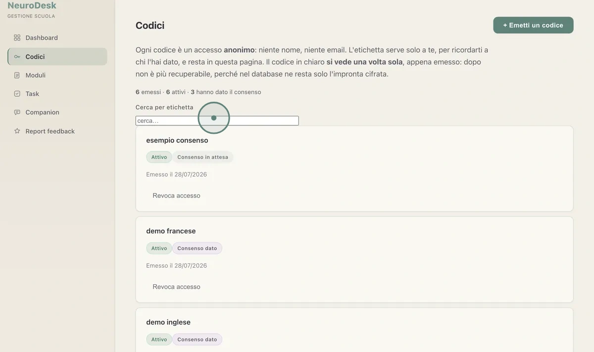
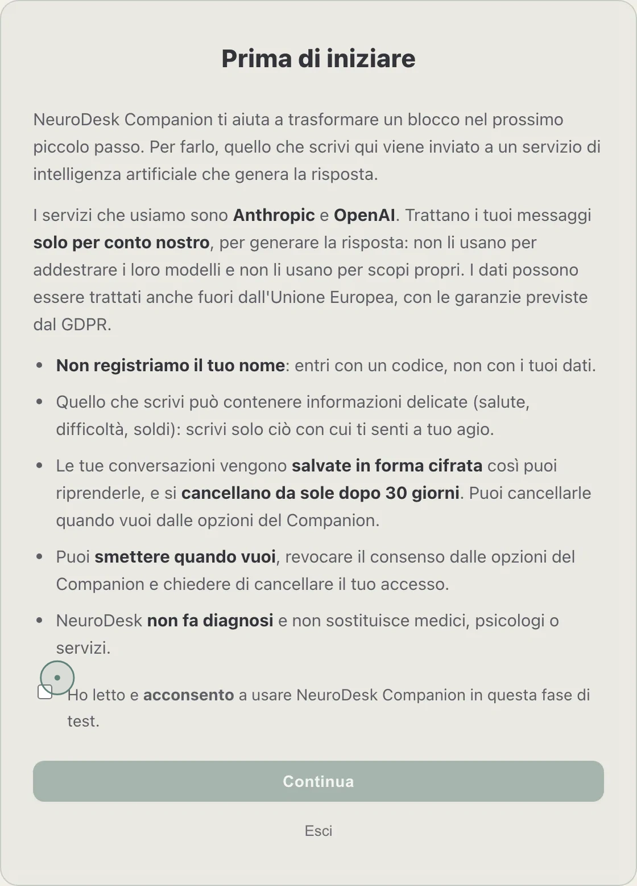

Nous aidons les adultes neurodivergents à faire le premier pas
NeuroDesk transforme la surcharge en un pas possible : un outil pratique pour celles et ceux qui, chaque jour, ont du mal à commencer. Nous sommes en phase pilote, avec une plateforme qui fonctionne, et nous cherchons des partenaires pour l'apporter à plus de personnes.

Beaucoup de personnes neurodivergentes affrontent chaque jour des tâches qui deviennent pour elles un obstacle : démarches, études, travail, gestion de la maison. Souvent, ce n'est pas la volonté qui manque, mais une aide conçue pour la façon dont leur esprit fonctionne vraiment.
Un compagnon qui donne un seul pas à la fois
La personne écrit la tâche qu'elle n'arrive pas à commencer. NeuroDesk répond par une micro-action concrète, sur un ton qui ne juge pas.

Un écran réel du Companion, en phase pilote : de la surcharge à un pas de deux minutes.
À la personne, et à ceux qui l'accompagnent au quotidien
Le même outil, trois contextes d'usage : la personne qui l'utilise reste au centre ; celui qui le met à disposition ne gère que les accès.
Personnes neurodivergentes
Adultes avec TDAH, autisme, AuDHD, TOP ou troubles DYS qui veulent une aide concrète pour les tâches du quotidien.
Écoles et organismes
Établissements, services et organismes du secteur associatif qui accompagnent plusieurs personnes et veulent un outil pratique à ajouter à leur suivi.
Entreprises et organisations
NeuroDesk comme avantage pour le personnel : un soutien quotidien pour ceux qui peinent à commencer, organiser ou terminer une tâche. L'entreprise gère les accès, les conversations restent privées.
Le respect fait partie de NeuroDesk dès le début
Faible charge cognitive
Peu de mots à la fois, pas de longs textes, des boutons clairs. La simplicité fait partie de l'aide.
Aucune promesse vide
NeuroDesk est un outil, pas une thérapie, et ne pose pas de diagnostic. Il ne remplace ni médecins ni services.
Construit avec ceux qui l'utilisent
Les fonctions naissent de l'écoute de personnes neurodivergentes — TDAH, autisme, AuDHD, TOP, troubles DYS — et s'affinent avec leurs retours.

Le consentement n'est pas une case cachée dans les conditions : c'est un écran entier, avant le premier mot écrit.
Une plateforme qui fonctionne, déjà entre les mains des testeurs
La plateforme, le Companion et la collecte des retours fonctionnent déjà. Nous cherchons des partenaires pour l'apporter à plus de personnes.
NeuroDesk est aussi né de l'écoute de celles et ceux qui parlent de la neurodivergence sans la simplifier ni la réduire à une définition de manuel.
Un remerciement particulier à Luca Donato, dont la façon directe, concrète et profondément humaine de parler du TDAH, de l'autisme et de l'AuDHD est pour nous une source constante d'inspiration.
Aidez-nous à apporter NeuroDesk à ceux qui en ont besoin
Nous cherchons des financeurs, des partenaires et des soutiens qui croient en une technologie douce et inclusive. Nous pouvons vous la montrer en personne.
Parlons-enAucune donnée des testeurs n'est publique.
Vous voulez savoir qui est derrière ? Découvrez qui nous sommes →